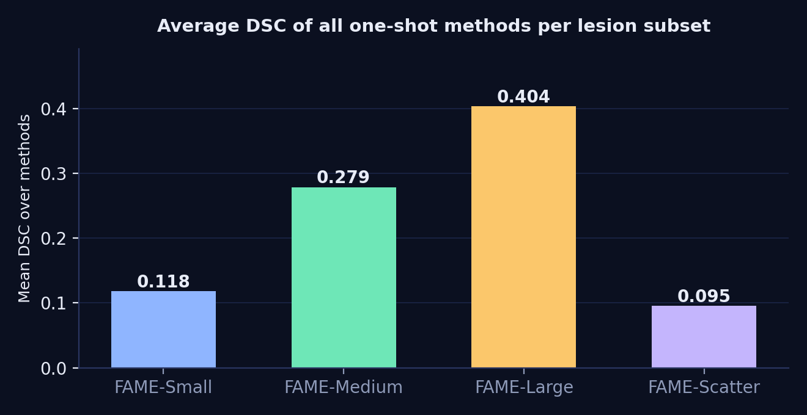
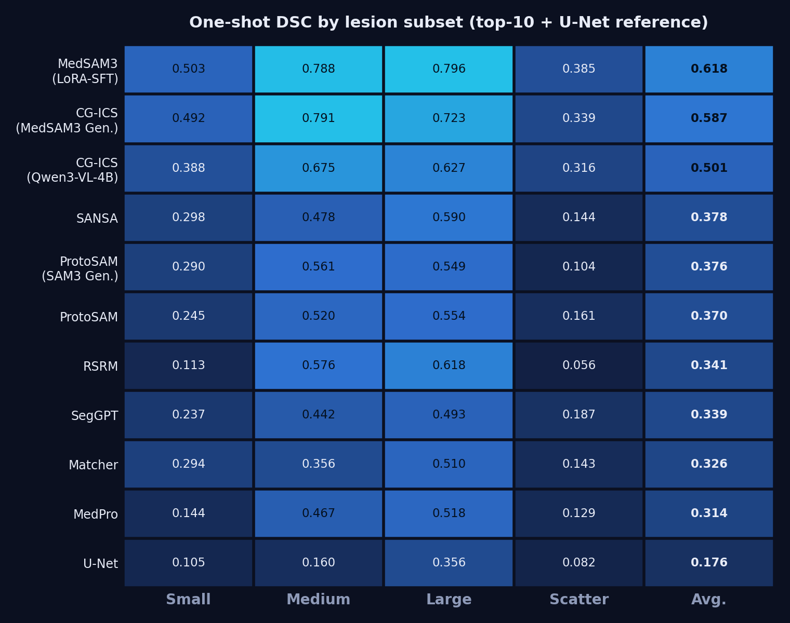
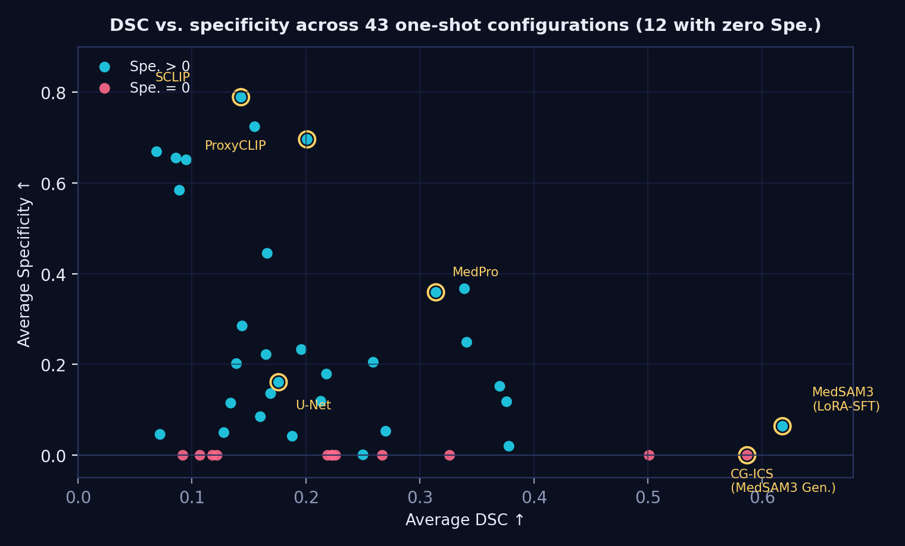

Real support/query examples straight from the FAME release — one representative case per source dataset. Filter by lesion subset, anatomy, or modality, then toggle each card between the raw image, the ground-truth overlay, and the isolated mask.
Overlay = ground-truth lesion (translucent fill + white contour) rendered in the anatomy colour. FG % is the task-level mean foreground-to-image area ratio r over positive images. FAME-Small (r < 2%), FAME-Medium (2% ≤ r < 10%), and FAME-Large (r ≥ 10%) contain blob-like lesions; FAME-Scatter contains lesions spread over multiple spatially separated regions, regardless of area. Tiny-lesion cases (marked ⤢ zoom) are cropped around the lesion so the target stays visible.
Few-shot lesion segmentation (FSLS) aims to segment lesions using only one or few annotated examples. Recent large pretrained models offer promising capabilities for FSLS, yet their effectiveness across diverse lesion types and segmentation strategies remains insufficiently understood. Moreover, existing evaluations often focus on images containing target lesions, providing limited insight into the specificity of these models.
To address these limitations, we introduce FAME, a lesion-focused benchmark integrating 17 public medical datasets across 7 anatomical sites. It organizes lesion segmentation tasks into four subsets according to lesion size and spatial distribution. We systematically evaluate 27 large-model methods alongside 7 conventional baselines, assessing both segmentation accuracy on positive queries and lesion-absence rejection on negative queries. We further investigate the effects of support set size and cross-dataset generalization.
Our evaluation makes several important findings. High segmentation accuracy does not guarantee high specificity. Stronger mask generators and additional support examples do not necessarily improve performance. The effectiveness of pretrained models depends on how they are used for segmentation. Furthermore, small and scattered lesions remain challenging, while cross-domain support can sometimes outperform in-domain support.
A lesion-focused benchmark that compares three large-model paradigms and seven conventional baselines under a single protocol, with dual metrics that reward both accurate delineation and correct lesion-absence rejection.
Similarity-based, prompt-based, and interaction-based methods evaluated on identical support/query episodes and pipeline.
DSC on positive queries plus image-level specificity on negative queries — exposing silent false alarms when the lesion is absent.
FAME-Small, FAME-Medium, FAME-Large, and FAME-Scatter, grouped by lesion size and spatial distribution.
Brain, breast, colon, lung, retina, skin, and thyroid across CT, MRI, ultrasound, colonoscopy, fundus photography, dermoscopy, and OCT.
Every method receives the same one-shot support pair and query — what differs is where the support information enters the pipeline. FAME groups 27 large-model methods and 7 conventional baselines into three paradigms, with the conventional baselines serving as reference points.
The support foreground is summarized as features or prototypes, and each query location is classified by similarity to them. Subfamilies: Matching (PANet, FAMNet, INSID3, RSRM) and CLIP Head (MaskCLIP, ProxyCLIP, SCLIP). Best average DSC in this group: RSRM, 0.341.
Support annotations are converted into prompts for a pretrained promptable segmenter. Subfamilies: SAM (GF-SAM, Matcher, SAM-MPA, MAUP, ProtoSAM, FoB, MedPLIB; LISA, GLaMM, F-LMM, Text4Seg, READ, STAMP, LENS), SAM2 (SANSA, MedPro), and SAM3 (CG-ICS, MedSAM3). Best average DSC overall: MedSAM3 (LoRA-SFT), 0.618.
Support and query features interact inside the segmenter itself, without a separate prompt generator. Subfamilies: Transformer (SegGPT, SINE), CNN (UniverSeg, Tyche, DIFD, U-Net, nnU-Netv2), and Diffusion (DiffewS, SD-FSMIS). Best average DSC in this group: SegGPT, 0.339.
A consistent story across lesion subsets, support budgets, and distribution shifts.

Averaged over all one-shot methods, DSC is 0.404 on FAME-Large but only 0.118 on FAME-Small and 0.095 on FAME-Scatter. FAME-Medium sits at 0.279. Small and scattered lesions are the main open challenge — not simply a matter of model scale.
FAMNet averages 0.165 overall but 0.181 on Scatter, whereas RSRM averages 0.341 but only 0.056 on Scatter. Even within one subset, performance varies strongly across datasets, which is why FAME reports task-level macro-averages rather than case-level aggregation.


12 of the 43 one-shot configurations obtain zero specificity. MedSAM3 (LoRA-SFT) reaches the best average DSC (0.618) with 0.064 Spe., while ProxyCLIP reaches 0.696 Spe. at 0.201 DSC. The two abilities are largely decoupled, so a single overlap metric is not enough for clinical reliability.
Benchmark-level average DSC and specificity in the primary one-shot setting, averaged over five fixed support groups. Methods below U-Net (0.176 DSC) are excluded from the paper's ranking.
| Method | Paradigm | Avg DSC ↑ | Avg Spe. ↑ | Small | Medium | Large | Scatter |
|---|---|---|---|---|---|---|---|
| MedSAM3 (LoRA-SFT) | Prompt | 0.618 | 0.064 | 0.503 | 0.788 | 0.796 | 0.385 |
| CG-ICS (MedSAM3 Gen.) | Prompt | 0.587 | 0.000 | 0.492 | 0.791 | 0.723 | 0.339 |
| CG-ICS (Qwen3-VL-4B) | Prompt | 0.501 | 0.000 | 0.388 | 0.675 | 0.627 | 0.316 |
| SANSA | Prompt | 0.378 | 0.020 | 0.298 | 0.478 | 0.590 | 0.144 |
| ProtoSAM (SAM3 Gen.) | Prompt | 0.376 | 0.118 | 0.290 | 0.561 | 0.549 | 0.104 |
| ProtoSAM | Prompt | 0.370 | 0.152 | 0.245 | 0.520 | 0.554 | 0.161 |
| RSRM | Similarity | 0.341 | 0.249 | 0.113 | 0.576 | 0.618 | 0.056 |
| SegGPT | Interaction | 0.339 | 0.367 | 0.237 | 0.442 | 0.493 | 0.187 |
| Matcher | Prompt | 0.326 | 0.000 | 0.294 | 0.356 | 0.510 | 0.143 |
| MedPro | Prompt | 0.314 | 0.359 | 0.144 | 0.467 | 0.518 | 0.129 |
| U-Net (reference) | Interaction | 0.176 | 0.161 | 0.105 | 0.160 | 0.356 | 0.082 |
Four observations that hold consistently across the benchmark.
12 of 43 one-shot configurations obtain zero specificity. SANSA reaches 0.378 DSC with 0.020 Spe., while MedPro reaches 0.314 DSC with 0.359 Spe. Lesion delineation and lesion-absence rejection are distinct capabilities.
Replacing SAM3 with MedSAM3 lifts CG-ICS from 0.501 to 0.587, but ProtoSAM only moves from 0.370 to 0.376 and drops on Scatter from 0.161 to 0.104. Text4Seg decreases from 0.095 to 0.086.
Tyche improves on FAME-Large from 35.4% to 65.0% DSC at K=10, while SegGPT gains DSC but loses specificity. INSID3 gains 31.6 pp specificity yet reaches only 1.9% DSC on Small at 10 shots.
Tyche and UniverSeg stay below 13% DSC on Scatter even with 10 supports. Cross-domain support can sometimes help (CG-ICS +2.82 pp, ProxyCLIP +8.00 pp) but hurts MedPro (−10.24 pp).
Beyond the headline leaderboard, these analyses explain why the paradigms behave the way they do — each grounded in the paper's per-task results.
Upgrading the mask generator helps only when the surrounding pipeline can exploit it. CG-ICS improves from 0.501 (Qwen3-VL-4B) to 0.587 (MedSAM3 Gen.), but ProtoSAM moves only from 0.370 to 0.376 and degrades on Scatter (0.161 → 0.104). Text4Seg even drops from 0.095 to 0.086 when SAM3 is introduced. Pretrained representations, support guidance, and mask generation must work together.
With the same LLaVA-1.5-7B backbone, LENS reaches 0.169 average DSC versus 0.107 for F-LMM — a gap of 0.121 vs. 0.033 on Small and 0.094 vs. 0.014 on Scatter, but only 0.289 vs. 0.265 on Large. Text4Seg, which generates mask representations autoregressively, reaches 0.095, whereas LISA and GLaMM, which predict segmentation embeddings for dedicated decoders, reach 0.259 and 0.250.
SANSA and MedPro both build on SAM2, yet SANSA leads on DSC (0.378 vs. 0.314) while MedPro leads on specificity (0.359 vs. 0.020). On Small, SANSA reaches 0.298 DSC with 0.002 Spe., compared with 0.144 DSC and 0.403 Spe. for MedPro; on Scatter, 0.144/0.064 versus 0.129/0.653. Future methods must decide whether the lesion is present before generating a mask.
Tyche improves substantially on FAME-Large (35.4% → 65.0% DSC) and surpasses CG-ICS at 10 shots despite trailing it at 1 shot. SegGPT gains overall DSC as K grows but loses specificity, while INSID3 improves specificity by 31.6 pp with almost unchanged DSC — reaching 98.2% Spe. but only 1.9% DSC on Small at 10 shots. More supports do not automatically mean better lesion localization.
Replacing target-domain support with source-domain examples does not always degrade performance: CG-ICS and ProxyCLIP improve by 2.82 and 8.00 pp on average, although the gains vary across dataset pairs, while MedPro drops by 10.24 pp. All methods perform poorly on Retinal→DDR under both in-domain and cross-domain support, showing that poor transfer is not explained by domain shift alone.
The paper's efficiency analysis finds no consistent relationship between GPU memory consumption and DSC. Larger or more heavily adapted models do not reliably outperform lighter pipelines, reinforcing that how pretrained models and support annotations are used matters more than raw capacity.
If you use FAME, please cite our paper.
@misc{liu2026benchmarkinglargemodelmethods,
title = {Benchmarking Large-Model Methods
for Few-Shot Lesion Segmentation},
author = {Jinghong Liu and Yuchuan Deng and Fanping Liu
and Meng Huang and Xirong Li},
year = {2026},
eprint = {2607.27856},
archivePrefix= {arXiv},
primaryClass = {cs.CV},
url = {https://arxiv.org/abs/2607.27856}
}